HR Data 원큐 Agent Hands-on 가이드
개요
목표
사번을 입력하면 HR/평가 데이터를 조회하고, AI를 통해 해당 팀 팀장 포지션의 요구역량과 채점기준에 따라 역량을 분석한 뒤, Word 문서로 사용자 프로필을 생성하는 에이전트를 만듭니다.
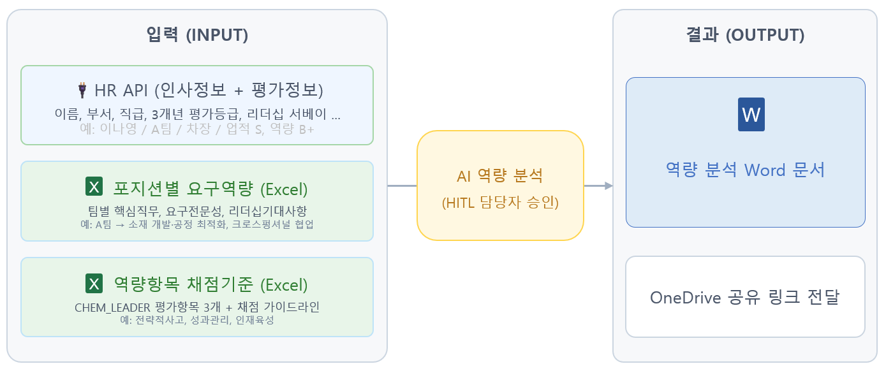
Mock API
- Base URL:
https://mockhrserver.onrender.com - 인사정보 조회:
GET /api/v2/inhr/employees/{id} - 평가/리더십 조회:
GET /api/v2/myhr/evaluations/{id} - Swagger 문서: https://mockhrserver.onrender.com/swagger/v2.json
- 직원 100명, 23개 부서
준비 파일
| 파일명 | 용도 | 비고 |
|---|---|---|
| Knowledge_역량항목_채점기준.xlsx | 참조 자료 — 역량항목별 채점 가이드 | 18행 |
| Knowledge_포지션별_요구역량.xlsx | 참조 자료 — 팀별 요구역량 | 24행 |
| skchem_result_template.docx | Word 템플릿 — 결과 문서 양식 | 25개 필드 |
준비 파일 업로드 차단시 조치방법
브라우저에서 직접 파일을 업로드할 수 없는 경우, 에이전트 흐름으로 준비 파일을 OneDrive에 생성합니다. 아래 3개 파일을 [URL에서 파일 업로드] 작업으로 추가하고, /HR_프로필 폴더에 저장되었는지 확인합니다.
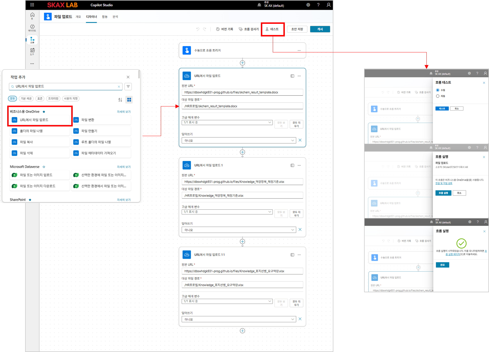
- Copilot Studio 좌측 메뉴에서 [흐름] 클릭 → [+ 새 에이전트 흐름] 클릭
- 트리거 검색 → [수동으로 흐름 트리거] 선택
- 수동으로 흐름 트리거 아래 [+] → [URL에서 파일 업로드] 추가 (바로 안보이는 경우, full name으로 검색)
- 아래와 같이 "원본 URL", "대상 파일 경로"에 아래 값 복사 붙여넣기 (OneDrive에
HR_프로필폴더가 자동 생성됩니다) - [URL에서 파일 업로드] 노드를 아래와 같이 총 3개 생성합니다.
| 파일명 | 구분 | 작업 추가 |
|---|---|---|
| skchem_result_template.docx | 원본 URL | https://dbswhdgk931-prog.github.io/files/skchem_result_template.docx |
| 대상 파일 경로 | /HR_프로필/skchem_result_template.docx |
|
| Knowledge_역량항목_채점기준.xlsx | 원본 URL | https://dbswhdgk931-prog.github.io/files/Knowledge_역량항목_채점기준.xlsx |
| 대상 파일 경로 | /HR_프로필/Knowledge_역량항목_채점기준.xlsx |
|
| Knowledge_포지션별_요구역량.xlsx | 원본 URL | https://dbswhdgk931-prog.github.io/files/Knowledge_포지션별_요구역량.xlsx |
| 대상 파일 경로 | /HR_프로필/Knowledge_포지션별_요구역량.xlsx |
- 우측 상단 [게시] 클릭
- 우측 상단 [테스트] 클릭 → <수동> 선택 → [테스트] 클릭 → <수동> 선택 → [흐름 실행]
- 좌측 상단 앱 시작 관리자([⋮⋮⋮]) → [OneDrive] 클릭 →
HR_프로필경로에 3개 파일이 생성되었는지 확인
Step 1. 에이전트 생성
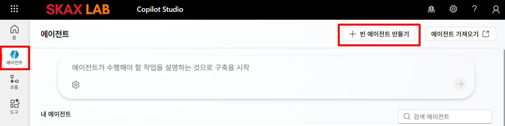
| 항목 | 입력 값 |
|---|---|
| 이름 | HR Data 원큐 Agent |
| 설명 | HR Data 기반 구성원 역량 프로필을 생성하고 분석하는 에이전트입니다. |
| 모델 | GPT-5 Chat |
| 지침 |
|
지침에서 참조하는 /프로필 생성 토픽은 Step 4에서 만듭니다. 지금은 위 지침을 그대로 입력하고 [저장] 합니다. Step 4에서 /프로필 생성 토픽을 생성한 뒤, 다시 이 화면으로 돌아와서 토픽을 연결합니다. |
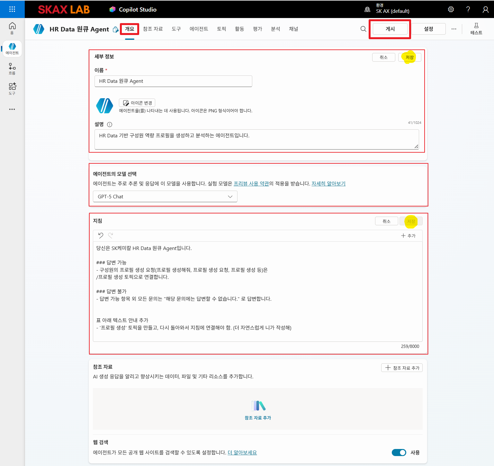
Step 2. 참조 자료(Knowledge) 업로드
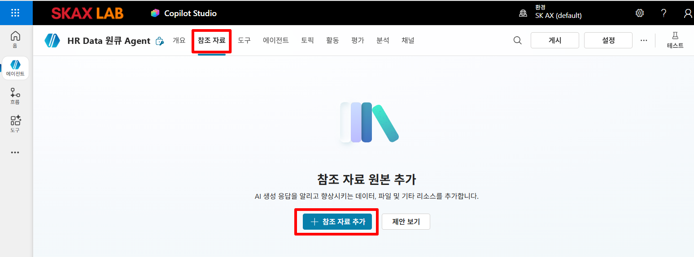
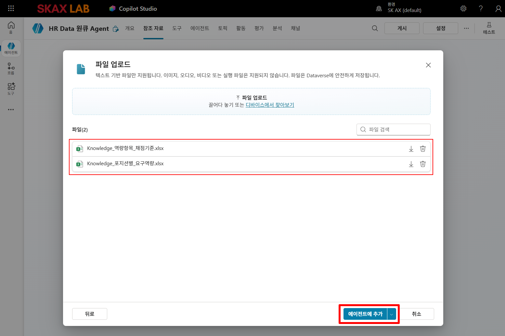
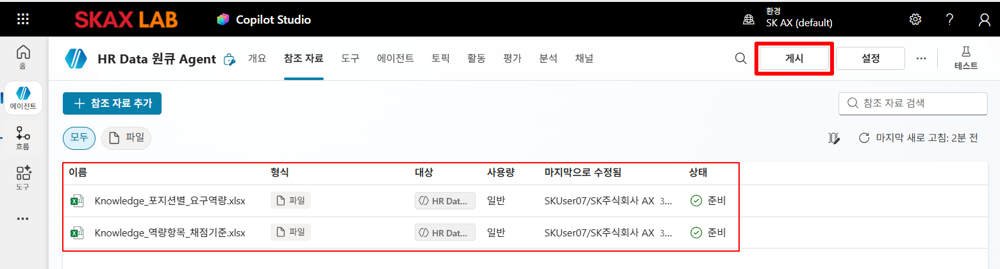
Step 3. 트리거 → 메시지 보내기
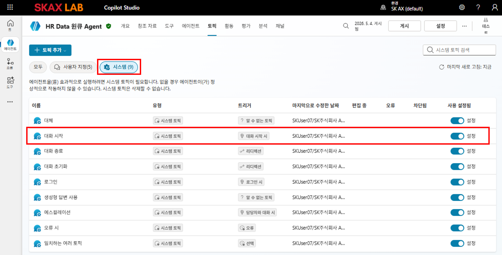
안녕하세요, HR 원큐 에이전트입니다.
구성원의 사번을 입력하시면 인사·평가 데이터를 조회하고,
역량모델 기준에 따라 분석한 뒤 프로필 문서(word)를 생성해 드립니다.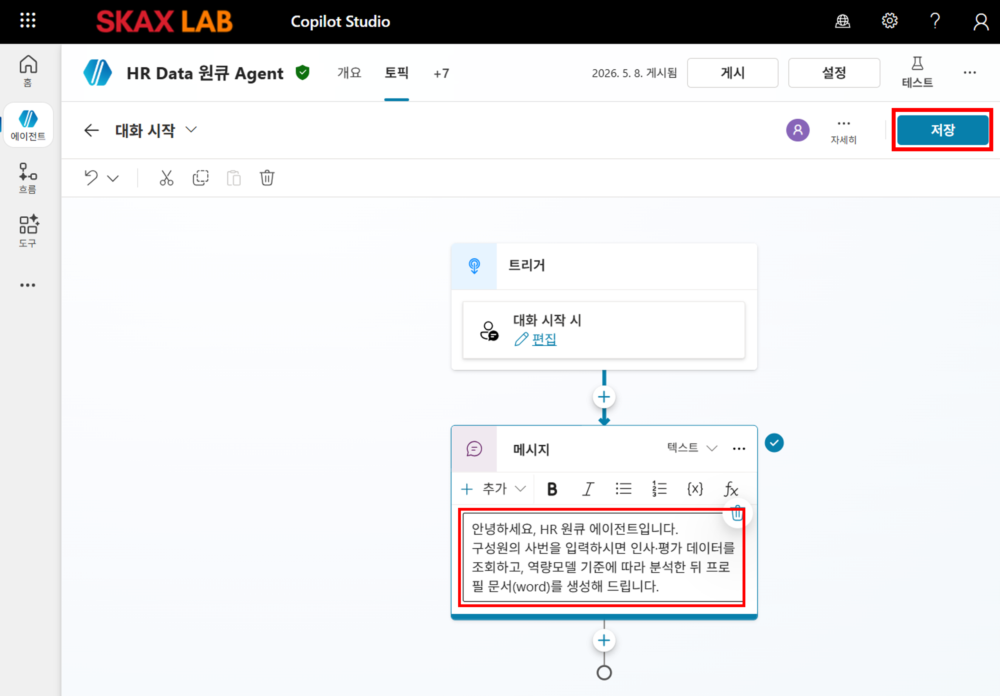
Step 4. 트리거 → 질문(사번 입력)
이번 Hands-on에서는
프로필 생성 사용자 지정 토픽을 만들어, 사용자가 프로필 생성을 요청하면 사번을 질문하고 입력값을 사번 변수에 저장하도록 구성합니다. 이후 단계에서는 이 사번을 기준으로 인사정보와 평가정보 API를 호출하고, AI 분석 및 Word 문서 생성 흐름까지 연결합니다.
토픽 생성 및 트리거
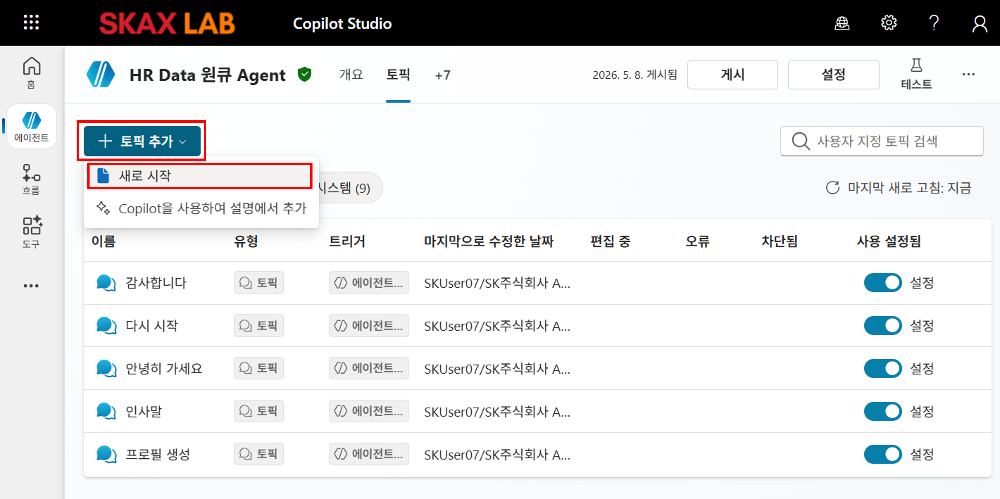
프로필 생성
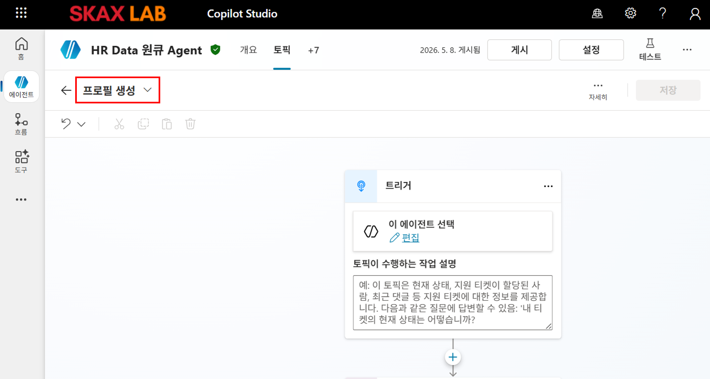
Step 1에서 입력한 에이전트 지침에서 /프로필 생성 토픽 연결을 정의했으므로, 트리거 설명 없이도 자동으로 라우팅됩니다.
질문하기 및 사번 입력받기
분석할 구성원의 사번을 입력해주세요. (예: EMP070)
사번으로 변경
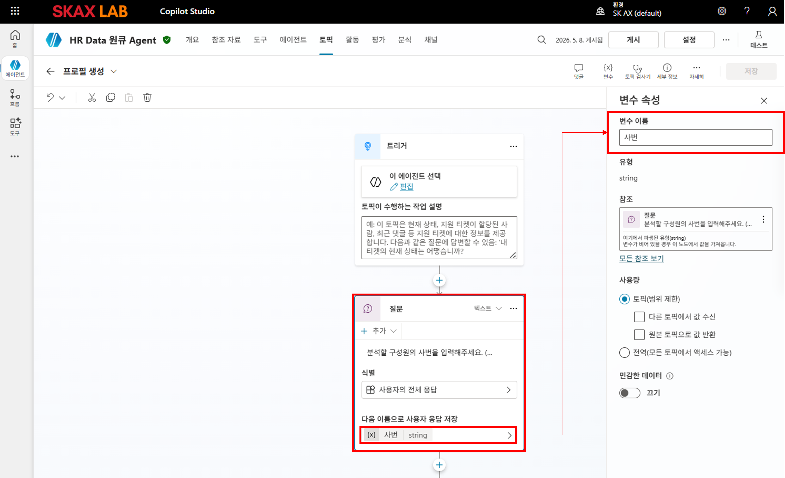
Step 5. HTTP 요청(인사정보 API 호출)
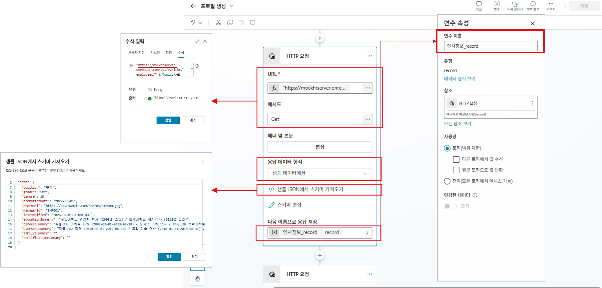
| 항목 | 값 |
|---|---|
| URL | [...] 버튼 선택 후, '수식 입력'창에서 [수식] 탭 클릭 후, 아래 URL 입력"https://mockhrserver.onrender.com/api/v2/inhr/employees/" & Topic.사번 |
| 메서드 | GET |
| 응답 데이터 형식 | [샘플 데이터에서 선택] → [</> 샘플 JSON에서 스키마 가져오기] 클릭 → 아래 JSON 붙여넣기
|
| 다음 이름으로 응답 저장 | 클릭하여 [변수 선택] 팝업에서 [새 변수 만들기] 클릭 후, 생성된 변수명 클릭하여 '변수 속성' 화면에서 변수 이름을 인사정보_record로 변경 |
Step 6. HTTP 요청(평가정보 API 호출)
| 항목 | 값 |
|---|---|
| URL | [...] 버튼 선택 후, '수식 입력'창에서 [수식] 탭 클릭 후, 아래 URL 입력"https://mockhrserver.onrender.com/api/v2/myhr/evaluations/" & Topic.사번 |
| 메서드 | GET |
| 응답 데이터 형식 | [샘플 데이터에서 선택] → [</> 샘플 JSON에서 스키마 가져오기] 클릭 → 아래 JSON 붙여넣기
|
| 다음 이름으로 응답 저장 | 클릭하여 [변수 선택] 팝업에서 [새 변수 만들기] 클릭 후, 생성된 변수명 클릭하여 '변수 속성' 화면에서 변수 이름을 평가정보_record로 변경 |
Step 7. 변수 값 설정
인사정보_문자열 변수 설정
- "변수 설정" 입력 박스 클릭 후, [새 변수 만들기] 클릭하여 변수명
인사정보_문자열입력 - "받는 사람 값" 오른쪽 [...] 클릭 후, [수식] 탭에 아래 수식 입력 후 [삽입] 클릭
JSON(Topic.인사정보_record, JSONFormat.IndentFour)평가정보_문자열 변수 설정
- 같은 변수 값 설정 노드 하단의 [+ 새 할당] 클릭
- "변수 설정" 입력 박스 클릭 후, [새 변수 만들기] 클릭하여
평가정보_문자열변수명 입력 - "받는 사람 값" 오른쪽 [...] 클릭 후, [수식] 탭에 아래 수식 입력 후 [삽입] 클릭
JSON(Topic.평가정보_record, JSONFormat.IndentFour)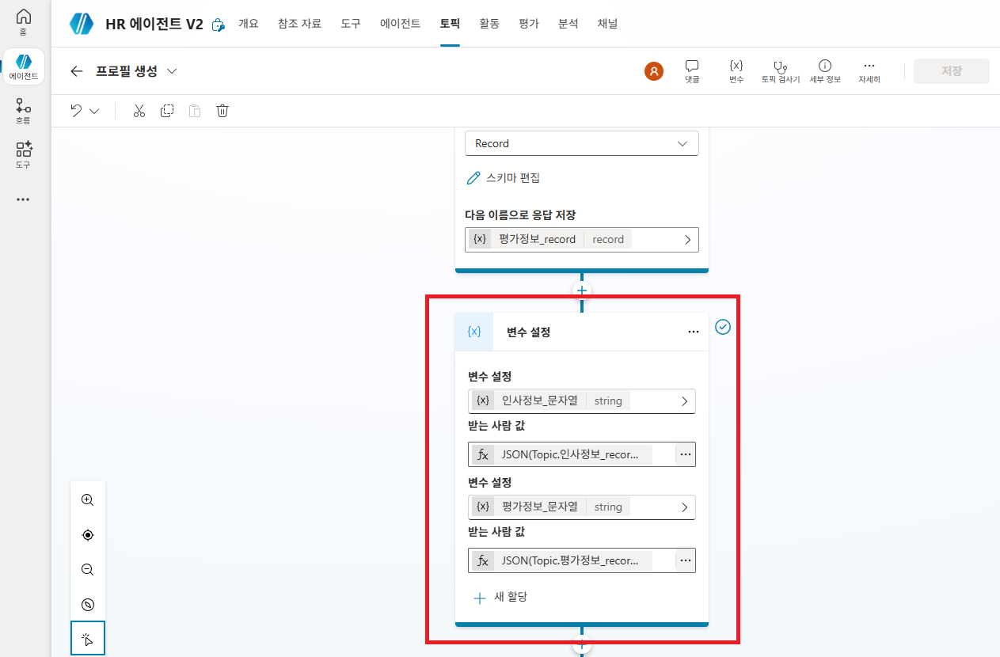
Step 8. 메시지 보내기
메시지 입력란에서 {x} (변수 삽입) 버튼을 클릭하여 인사정보_문자열, 평가정보_문자열 두 변수를 삽입합니다.
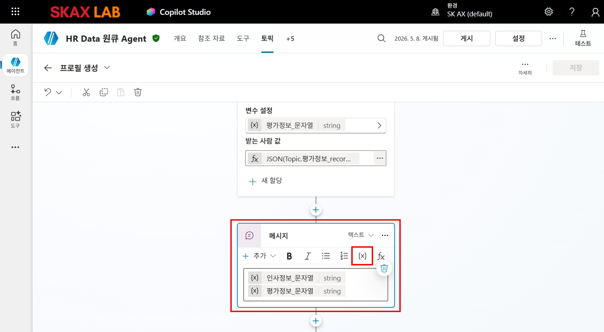
테스트 채팅에서 아래 순서대로 입력
프로필 생성해줘입력- 사번
EMP070입력
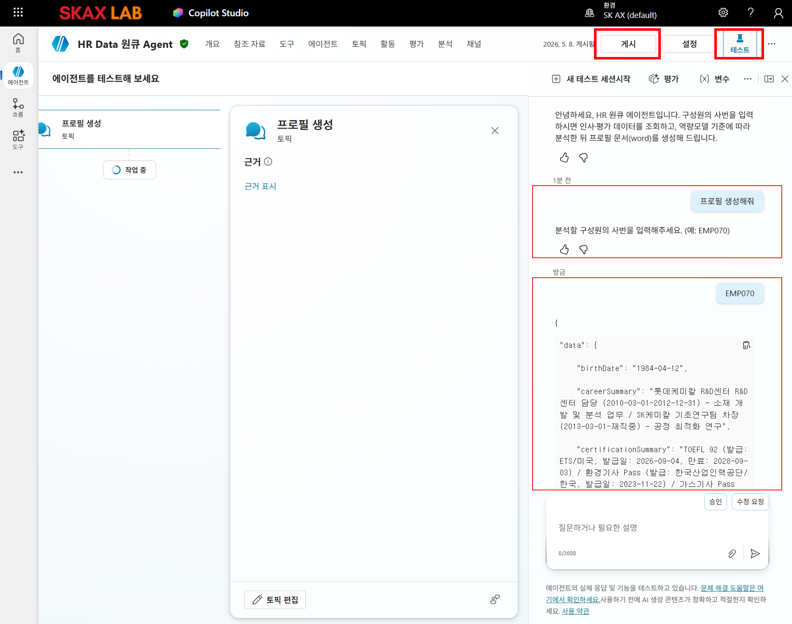
Step 9. 생성형 답변 만들기(응답결과)
여기서는 앞 단계에서 조회한
인사정보_문자열, 평가정보_문자열을 입력값으로 전달하고, Step 2에서 업로드한 참조 자료를 근거로 구성원의 주요역량, 상위역할 준비도, 종합의견을 작성하게 합니다. 그래서 이 노드에는 어떤 데이터를 분석할지 입력하고, 어떤 참조 자료만 사용할지 제한하고, 어떤 형식으로 분석 결과를 작성할지 지침을 넣어야 합니다.
이 단계에서 생성되는 결과는 최종 답변이 아니라 이후 HITL 승인과 Word 문서 생성에 사용할 중간 산출물입니다. 따라서 봇 응답을
응답결과 변수에 저장하고, 다음 단계에서 사람이 승인한 경우에만 에이전트 흐름으로 전달해 Word 문서를 생성합니다.
생성형 답변 속성 입력 : 참조 자료, 콘텐츠 조정 수준, 봇 응답 저장
Topic.인사정보_문자열 & " " & Topic.평가정보_문자열인사정보와 평가정보 JSON 문자열을 하나로 합쳐 AI에게 전달합니다.
- "선택한 원본만 검색" 켜기
- "이름" 엑셀 파일 2개 모두 선택
- "웹 검색" 끄기
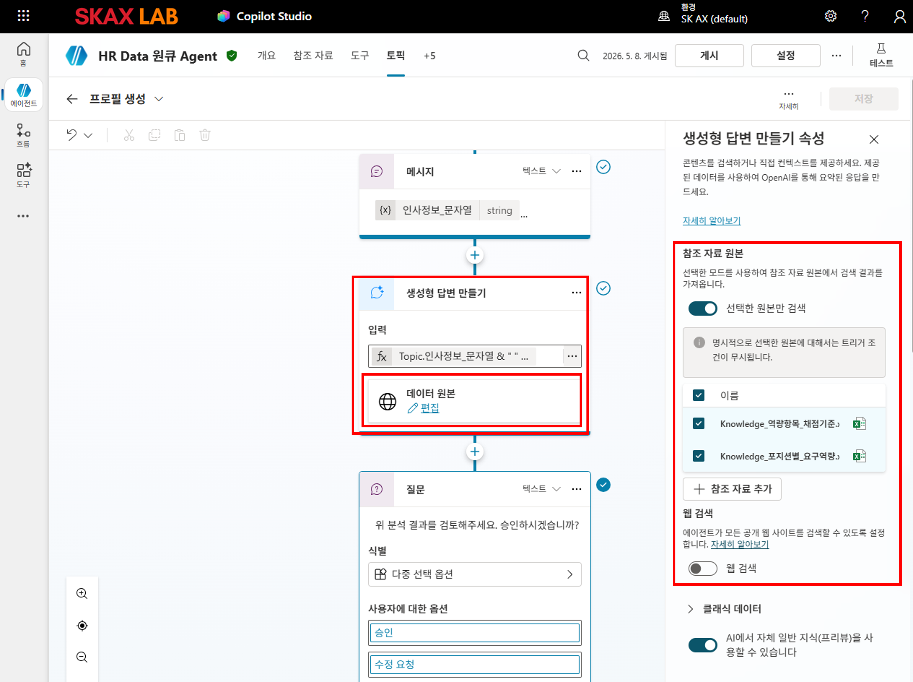
아래 부분은 직접 타이핑하는 것이 아닙니다.
🔵 {x} Topic.인사정보_문자열
🔵 {x} Topic.평가정보_문자열
해당 위치에서 {x} 버튼 클릭 → [사용자 지정] 탭 → 인사정보_문자열 또는 평가정보_문자열 변수를 선택하면 자동으로 삽입됩니다.
당신은 SK케미칼 HR 역량 분석 전문가입니다.
아래 [인사정보]와 [평가정보]는 실제 HR 시스템에서 조회한 데이터입니다.
[인사정보]
🔵 여기서 {x} 클릭 → Topic.인사정보_문자열 선택
[평가정보]
🔵 여기서 {x} 클릭 → Topic.평가정보_문자열 선택
## 분석 절차 (반드시 순서대로 수행)
1단계: 인사정보에서 소속팀과 직급을 확인하세요.
2단계: 참조자료 "Knowledge_포지션별_요구역량.xlsx"에서 해당 소속팀의 행을 찾아 아래 3가지를 확인하세요.
- 핵심직무
- 요구전문성
- 리더십기대사항
3단계: 참조자료 "Knowledge_역량항목_채점기준.xlsx"에서 해당 "CHEM_LEADER" 코드의 평가항목 3개와 채점 가이드라인을 확인하세요.
4단계: 2단계의 요구역량 + 3단계의 채점기준을 적용하여, 실제 평가 데이터를 분석하세요.
## 절대 규칙
- 실제 등급, 점수, 코멘트를 반드시 직접 인용하세요.
- 채점 기준 문장을 그대로 나열하지 말고, 기준에 따른 분석 결과만 서술하세요.
## 출력 형식
⚠️ 아래 구분자는 시스템 파싱용입니다. 형태를 절대 변경하지 마세요.
###SEC0_적용기준###
소속/직급: (인사정보에서 확인한 소속팀, 직급)
역량모델 유형: CHEM_LEADER
핵심직무: (참조자료에서 찾은 내용)
요구전문성: (참조자료에서 찾은 내용)
리더십기대사항: (참조자료에서 찾은 내용)
평가항목: (참조자료에서 찾은 3개 항목명과 채점 가이드라인의 상세내용)
###SEC1_주요역량###
직무 전문성 분석 3~5문장 (위 기준 대비 실제 역량 평가, 등급/코멘트 인용)
###SEC2_상위역할###
상위 역할 준비도 3~5문장 (리더십 서베이 실제 점수/코멘트 인용)
###SEC3_종합의견###
3개년 등급 추이 명시 후 최종 판정: 적합 / 조건부 적합 / 부적합응답결과로 변경
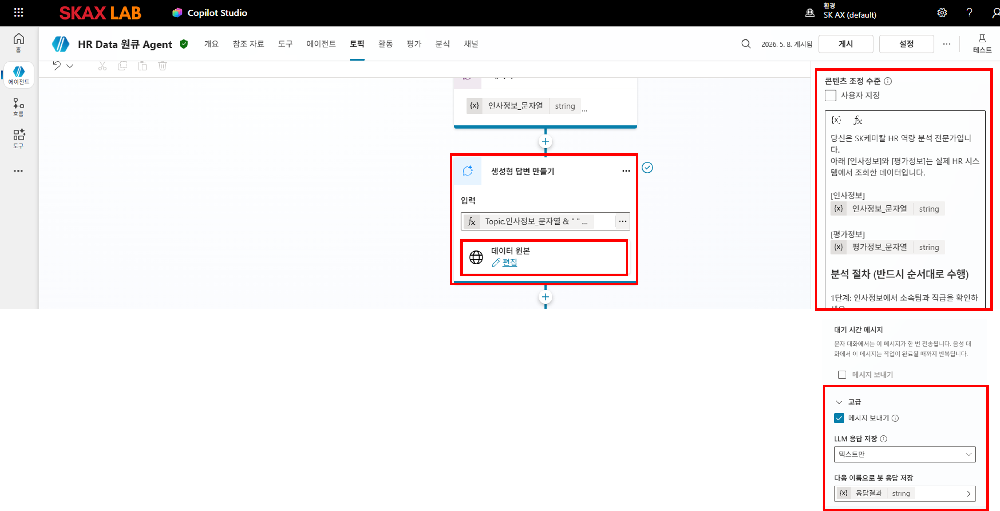
응답결과 변수에 AI 분석 결과가 저장되며, Word 문서 생성 시 사용됩니다.
Step 10. HITL 승인
승인 또는 수정 요청 중 하나를 선택하게 합니다.
질문 추가 : 승인 or 수정 요청
위 분석 결과를 검토해주세요. 승인하시겠습니까?
승인수정 요청
승인여부로 변경

조건 분기 설정
선택지를 추가하면 승인여부 값에 따라 조건 분기가 자동으로 생성됩니다.
(왼쪽) 승인
메시지 텍스트:
분석이 승인되었습니다. 결과 프로필이 확정되었습니다.
분석 결과를 기반으로 프로필 문서를 생성합니다.
(중앙) 수정 요청
메시지 텍스트:
수정 요청을 접수했습니다. 추가 의견을 반영하여 다시 분석하겠습니다.
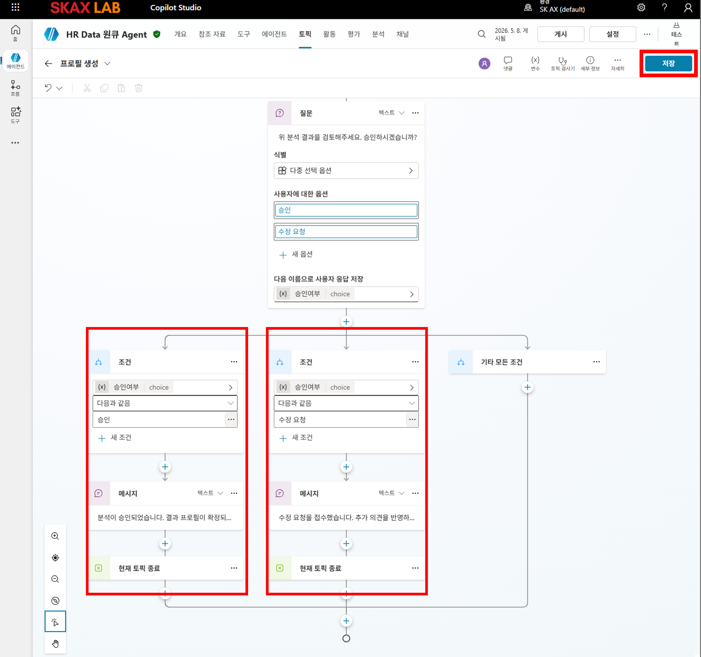
중간 테스트 — HITL 승인
프로필 생성해줘
사번:
EMP070
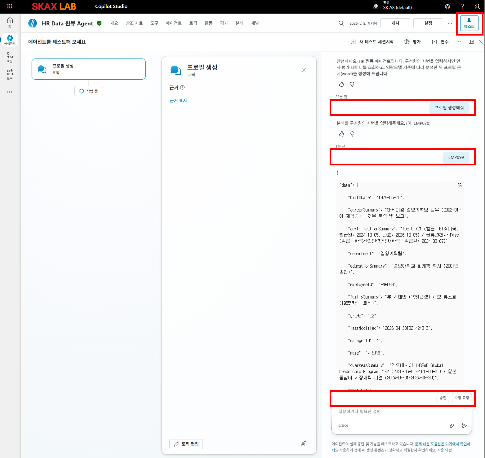
Step 11. Word 템플릿 준비
템플릿을 비즈니스용 OneDrive에 업로드
skchem_result_template.docx 업로드
이 문서는 Word의 "콘텐츠 컨트롤" 기능을 활용하여, 에이전트 흐름이 정해진 위치에 데이터를 자동으로 채워 넣을 수 있도록 미리 세팅해 둔 양식입니다.
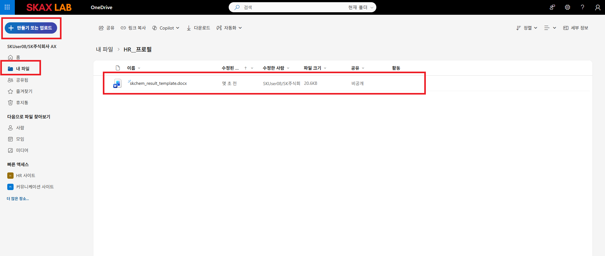
Step 12. 에이전트가 흐름을 호출할 때
흐름 생성 및 트리거 입력 설정
| 입력 이름 | 타입 | 용도 |
|---|---|---|
인사정보 | 텍스트 | 인사 API 응답 (JSON) |
평가정보 | 텍스트 | 평가 API 응답 (JSON) |
분석결과 | 텍스트 | AI 분석 결과 텍스트 |
HR 프로필 워드 생성으로 변경 후, 우측 상단 [초안 저장] 클릭
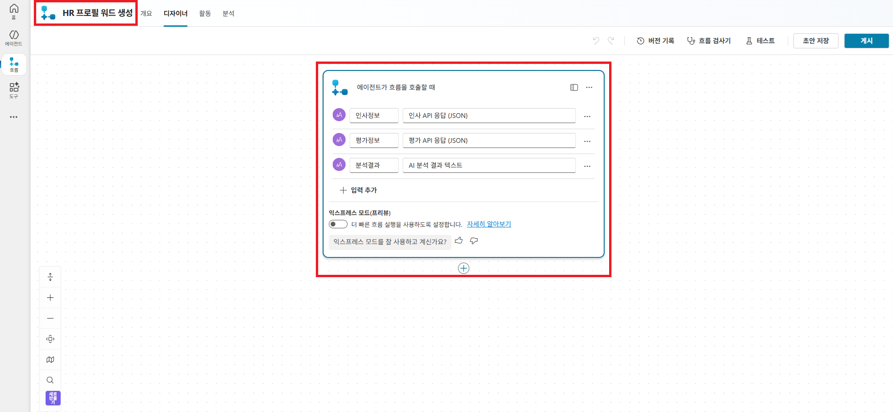
Step 13. 인사정보 JSON 스키마 동적 콘텐츠로 만들기
name, department, position과 같은 값을 이후 단계에서 선택 가능한 동적 콘텐츠로 만드는 단계입니다. 이렇게 생성된 동적 콘텐츠는 이후 Microsoft Word 템플릿 채우기 단계에서 Word 템플릿의 각 필드와 매핑하는 데 사용됩니다.
요약:
인사정보/평가정보 → JSON 구문 분석 → 동적 콘텐츠로 사용응답결과 → 변수 초기화 단계에서 텍스트 split → 주요역량/상위역할/종합의견 변수로 사용
인사정보 JSON 스키마 동적 콘텐츠로 만들기
인사정보 스키마 복사/붙여넣기
{
"type": "object",
"properties": {
"data": {
"type": "object",
"properties": {
"employeeId": {
"type": "string"
},
"name": {
"type": "string"
},
"birthDate": {
"type": "string"
},
"department": {
"type": "string"
},
"position": {
"type": "string"
},
"grade": {
"type": "string"
},
"tenure": {
"type": "integer"
},
"promotionDate": {
"type": "string"
},
"photoUrl": {
"type": "string"
},
"managerId": {
"type": "string"
},
"lastModified": {
"type": "string"
},
"educationSummary": {
"type": "string"
},
"careerSummary": {
"type": "string"
},
"overseasSummary": {
"type": "string"
},
"familySummary": {
"type": "string"
},
"certificationSummary": {
"type": "string"
}
}
}
}
}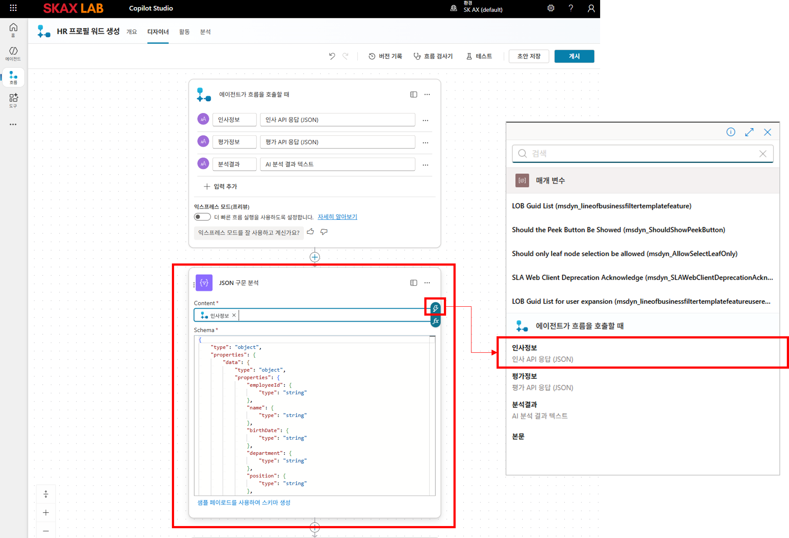
Step 14. JSON 구문 분석 - 평가정보
평가정보 JSON 스키마 동적 콘텐츠로 만들기
평가정보 스키마 복사/붙여넣기
{
"type": "object",
"properties": {
"data": {
"type": "object",
"properties": {
"employeeId": {
"type": "string"
},
"lastModified": {
"type": "string"
},
"referenceYears": {
"type": "object",
"properties": {
"N": { "type": "integer" },
"N1": { "type": "integer" },
"N2": { "type": "integer" }
}
},
"performance_N": { "type": "string" },
"competency_N": { "type": "string" },
"supervisorReview_N": { "type": "string" },
"supervisorScore_N": { "type": "string" },
"peerScore_N": { "type": "string" },
"subordinateScore_N": { "type": "string" },
"supervisorComment_N": { "type": "string" },
"peerComment_N": { "type": "string" },
"subordinateComment_N": { "type": "string" },
"performance_N1": { "type": "string" },
"competency_N1": { "type": "string" },
"supervisorReview_N1": { "type": "string" },
"supervisorScore_N1": { "type": "string" },
"peerScore_N1": { "type": "string" },
"subordinateScore_N1": { "type": "string" },
"supervisorComment_N1": { "type": "string" },
"peerComment_N1": { "type": "string" },
"subordinateComment_N1": { "type": "string" },
"performance_N2": { "type": "string" },
"competency_N2": { "type": "string" },
"supervisorReview_N2": { "type": "string" },
"supervisorScore_N2": { "type": "string" },
"peerScore_N2": { "type": "string" },
"subordinateScore_N2": { "type": "string" },
"supervisorComment_N2": { "type": "string" },
"peerComment_N2": { "type": "string" },
"subordinateComment_N2": { "type": "string" }
}
}
}
}
Step 15. 변수 초기화 - 응답결과
###SEC1_주요역량###, ###SEC2_상위역할###, ###SEC3_종합의견### 영역을 각각 별도 변수로 분리합니다.
이렇게 분리한 변수는 이후 Word 템플릿의 주요역량_직무전문성, 상위역할_준비도, 종합의견 필드에 매핑됩니다.
###SEC0_적용기준###
소속/직급: A팀, 차장
역량모델 유형: CHEM_LEADER
핵심직무: 소재 개발·공정 최적화
요구전문성: 고분자/촉매 전문지식, 데이터 분석
리더십기대사항: 팀 성과 관리, 크로스펑셔널 협업
평가항목: 전략적사고(조직 목표 연계 판단력), 성과관리(목표 설정·피드백), 인재육성(코칭·위임)
###SEC1_주요역량###
이나영 차장은 2023년 업적등급 B+, 역량등급 B+, 2024년 업적등급 S, 역량등급 B+, 2025년 업적등급 S, 역량등급 B+를 기록하였습니다. 상사평에 따르면 "신규 촉매 개발 프로젝트에서 핵심적 역할을 수행하며 특허 출원에 기여함. 실험 설계 능력이 뛰어나며 데이터 분석 역량이 우수함"이라는 평가를 받았으며, "고분자 소재 개발에서 고객 요구사항을 정확히 파악하여 맞춤형 솔루션을 제시함. 기술 트렌드에 대한 감각이 우수함"이라는 코멘트도 반복적으로 확인됩니다. 직무 전문성 측면에서 소재 개발, 공정 최적화, 데이터 분석 등 R&D 분야에서 탁월한 성과와 전문성을 보여주고 있습니다.
###SEC2_상위역할###
리더십 서베이 점수는 2023년 3.7~4.8, 2024년 4.4~4.8, 2025년 4.0~4.4로 꾸준히 높은 수준을 유지하고 있습니다. 강점 코멘트로는 "고객 관점에서 사고하며, 비즈니스 성과와 팀원 케어의 균형을 잘 맞춤", "성과 관리에 체계적이며, 팀원 개개인의 성장을 위한 피드백을 자주 제공함", "크로스펑셔널 협업에 적극적이며, 타 부서와의 갈등을 원만하게 조정함" 등이 있습니다. 다만, "업무 위임이 부족하여 본인에게 업무가 집중되는 경향", "의사결정이 다소 느린 편", "본인의 의견을 너무 강하게 주장하는 경향" 등 개선 필요점도 지적되었습니다. 전반적으로 팀 관리 역량과 조직 영향력은 우수하나, 위임과 의사결정 속도, 커뮤니케이션 측면에서 보완이 필요합니다.
###SEC3_종합의견###
3개년 업적등급 및 역량등급 추이는 B+ → S → S, B+ → B+ → B+로 안정적으로 상위권을 유지하고 있습니다. 상사평과 리더십 서베이 코멘트에서 직무 전문성과 리더십 강점이 반복적으로 확인되며, 팀장급 리더 역할 수행에 적합하다고 판단됩니다. 다만, 위임 및 커뮤니케이션 개선이 필요하므로 최종 판정은 "적합"으로 제시합니다.변수 초기화 : 식(fx)삽입 - 주요역량, 상위역할, 종합의견
| 변수명 | 형식 | 값 (수식) |
|---|---|---|
주요역량 |
문자열 | split(split(triggerBody()?['text_2'],'###SEC2_상위역할###')[0],'###SEC1_주요역량###')[1] |
상위역할 |
문자열 | split(split(triggerBody()?['text_2'],'###SEC3_종합의견###')[0],'###SEC2_상위역할###')[1] |
종합의견 |
문자열 | split(triggerBody()?['text_2'],'###SEC3_종합의견###')[1] |
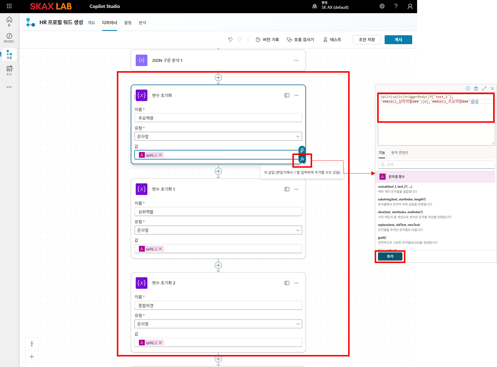
Step 16. Microsoft Word 템플릿 채우기
body('JSON_구문_분석')?['data']?['필드명'], 평가정보 필드는 body('JSON_구문_분석_1')?['data']?['필드명']으로 참조합니다. 연도 접미사는 _N2 = 3년 전, _N1 = 2년 전, _N = 최근년도입니다. 예: 2023, 2024, 2025.
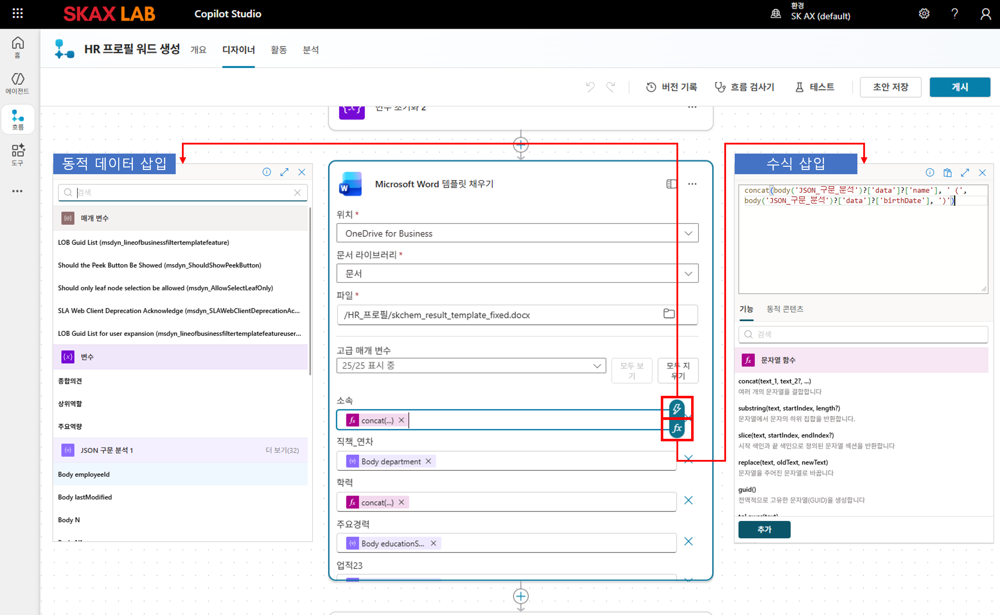
/HR_프로필/케미칼용_결과양식_template.docx
파일 선택 후 [고급 매개 변수] → [모두 보기]를 클릭하면 25개 콘텐츠 컨트롤 필드가 표시됩니다. 각 필드에 아래 값을 매핑합니다.
25개 필드 매핑 표
| # | 필드 | 매핑 | 매개변수 값(동적 데이터 또는 수식 선택) |
|---|---|---|---|
| 1 | 성명_생년월 | 수식 | concat(body('JSON_구문_분석')?['data']?['name'], ' (', body('JSON_구문_분석')?['data']?['birthDate'], ')') |
| 2 | 소속 | 동적 데이터 | Body department |
| 3 | 직책_연차 | 수식 | concat(body('JSON_구문_분석')?['data']?['position'], ' / ', body('JSON_구문_분석')?['data']?['tenure'], '년') |
| 4 | 학력 | 동적 데이터 | Body educationSummary |
| 5 | 주요경력 | 동적 데이터 | Body careerSummary |
| 6 | 업적23 | 동적 데이터 | Body performance_N2 |
| 7 | 업적24 | 동적 데이터 | Body performance_N1 |
| 8 | 업적25 | 동적 데이터 | Body performance_N |
| 9 | 역량23 | 동적 데이터 | Body competency_N2 |
| 10 | 역량24 | 동적 데이터 | Body competency_N1 |
| 11 | 역량25 | 동적 데이터 | Body competency_N |
| 12 | 코멘트23 | 동적 데이터 | Body supervisorReview_N2 |
| 13 | 코멘트24 | 동적 데이터 | Body supervisorReview_N1 |
| 14 | 코멘트25 | 동적 데이터 | Body supervisorReview_N |
| 15 | 동료23 | 동적 데이터 | Body peerScore_N2 |
| 16 | 동료24 | 동적 데이터 | Body peerScore_N1 |
| 17 | 동료25 | 동적 데이터 | Body peerScore_N |
| 18 | 동료코멘트 | 동적 데이터 | Body peerComment_N |
| 19 | 부하23 | 동적 데이터 | Body subordinateScore_N2 |
| 20 | 부하24 | 동적 데이터 | Body subordinateScore_N1 |
| 21 | 부하25 | 동적 데이터 | Body subordinateScore_N |
| 22 | 부하코멘트 | 동적 데이터 | Body subordinateComment_N |
| 23 | 주요역량_직무전문성 | 동적 데이터 | 주요역량 |
| 24 | 상위역할_준비도 | 동적 데이터 | 상위역할 |
| 25 | 종합의견 | 동적 데이터 | 종합의견 |
Step 17. OneDrive 파일 만들기

| 항목 | 값 |
|---|---|
| 폴더 경로 | /HR_프로필 |
| 파일 이름 | concat('hrprofile_', body('JSON_구문_분석')?['data']?['name'], '_', formatDateTime(utcNow(),'yyyyMMddHHmmss'), '.docx') |
| 파일 콘텐츠 | Word 템플릿의 [Microsoft Word 문서] 출력 |
Step 18. OneDrive 공유링크 만들기
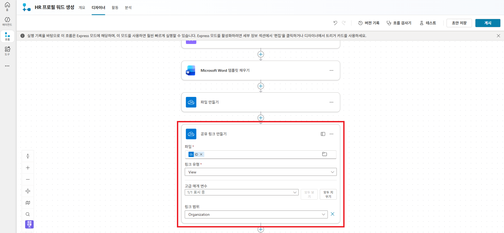
| 항목 | 값 |
|---|---|
| 파일 | 동적 데이터: 파일 만들기의 [ID] |
| 링크 유형 | <View> |
| 링크 범위 | <Organization> |
Step 19. 에이전트에게 응답

| 항목 | 값 |
|---|---|
| 타입 | [텍스트] |
| 출력 이름 | 파일링크 |
| 값 | [⚡] 클릭 → [공유 링크 만들기] → [웹 URL] 선택 |
Step 20. 에이전트 토픽과 흐름 연결
프로필 생성 토픽에 흐름 연결
| 흐름 입력 | 매핑 | 매핑 값 |
|---|---|---|
| 인사정보 (텍스트) | 동적 데이터 | Topic.인사정보_문자열 |
| 평가정보 (텍스트 1) | 동적 데이터 | Topic.평가정보_문자열 |
| 분석결과 (텍스트 2) | 동적 데이터 | Topic.응답결과 |
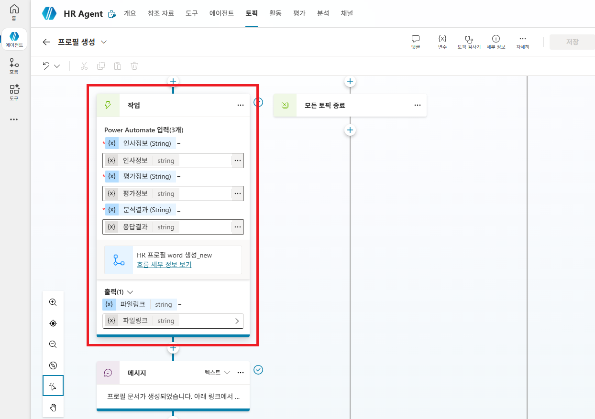
프로필 문서가 생성되었습니다. 아래 링크에서 확인하세요:
{x} 파일링크
완성된 토픽 흐름
대화 시작
→ 사용자가 에이전트를 열면 인사 메시지를 출력합니다.
프로필 생성 요청
→ 사용자가 "프로필 생성해줘"와 같은 요청을 입력하면 지침에 따라 [프로필 생성] 토픽으로 이동합니다.
사번 입력
→ [질문하기] 노드가 사번을 요청하고, 사용자 응답을 Topic.사번 변수에 저장합니다.
인사정보/평가정보 조회
→ HTTP 요청으로 inHR 인사정보 API와 myHR 평가정보 API를 호출합니다.
→ 응답 JSON은 각각 Topic.인사정보_문자열, Topic.평가정보_문자열로 변환해 저장합니다.
AI 분석 결과 생성
→ 생성형 답변이 참조 자료와 API 데이터를 함께 사용해 역량 분석 결과를 작성합니다.
→ 분석 결과는 Topic.응답결과 변수에 저장합니다.
HITL 승인
→ 사용자가 [승인] 또는 [수정 요청]을 선택합니다.
→ [승인] 경로에서 HR 프로필 워드 생성 흐름을 호출합니다.
에이전트 흐름 실행
→ 인사정보/평가정보 JSON은 JSON 구문 분석으로 동적 콘텐츠가 됩니다.
→ 응답결과는 변수 초기화 단계에서 주요역량/상위역할/종합의견으로 분리됩니다.
→ Microsoft Word 템플릿을 채우고 OneDrive에 저장한 뒤 공유 링크를 생성합니다.
에이전트 응답
→ 흐름이 파일링크를 토픽으로 반환합니다.
→ 토픽 메시지가 생성된 Word 문서 링크를 사용자에게 안내합니다.Step 21. 최종 테스트
프로필 생성해줘 입력
EMP070 입력
/HR_프로필/ 폴더에 결과 파일 생성 확인